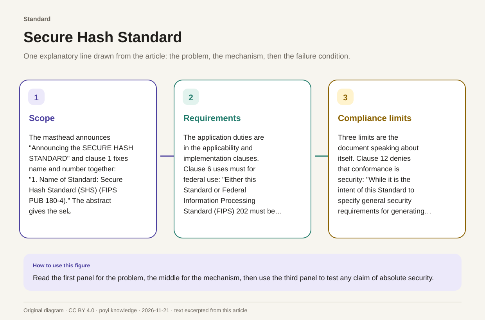
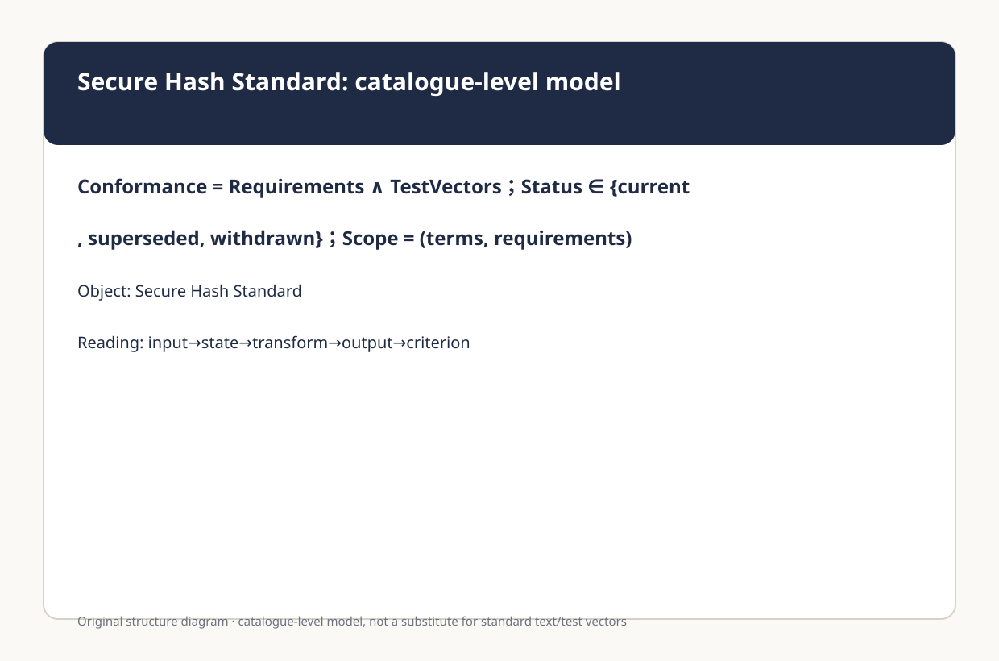

Principles
Standard: Secure Hash Standard (安全散列标准). The masthead announces "Announcing the SECURE HASH STANDARD" and clause 1 fixes name and number together: "1. Name of Standard: Secure Hash Standard (SHS) (FIPS PUB 180-4)." The abstract gives the self-definition: "This standard specifies hash algorithms that can be used to generate digests of messages." followed by the use: "The digests are used to detect whether messages have been changed since the digests were generated." Clause 3 names the algorithms and their object: "3. Explanation: This Standard specifies secure hash algorithms - SHA-1, SHA-224, SHA-256, SHA-384, SHA-512, SHA-512/224 and SHA-512/256 - for computing a condensed representation of electronic data (message)." and bounds the output: "The message digests range in length from 160 to 512 bits, depending on the algorithm." What is specified is the computation of the digests by these seven algorithms; judging strength is left to other documents.

Why it matters
The reason is stated in clause 3, where the two infeasibilities define the term: "The hash algorithms specified in this Standard are called secure because, for a given algorithm, it is computationally infeasible 1) to find a message that corresponds to a given message digest, or 2) to find two different messages that produce the same message digest." The consequence follows at once: "This will result in a verification failure when the secure hash algorithm is used with a digital signature algorithm or a keyed-hash message authentication algorithm." Clause 1 supplies the structural premise: "All of the algorithms are iterative, one-way hash functions that can process a message to produce a condensed representation called a message digest." Read together, a digest works as an integrity test only because finding the preimage and finding a collision are both infeasible, which is exactly what this document means by secure.
Applications
The application duties are in the applicability and implementation clauses. Clause 6 uses must for federal use: "Either this Standard or Federal Information Processing Standard (FIPS) 202 must be implemented wherever a secure hash algorithm is required for Federal applications, including as a component within other cryptographic algorithms and protocols." Clause 8 first leaves the carrier open: "8. Implementations: The secure hash algorithms specified herein may be implemented in software, firmware, hardware or any combination thereof." then sets the gate: "Only algorithm implementations that are validated by NIST will be considered as complying with this standard." The two work at different levels: one is a must-level requirement to implement either this Standard or FIPS 202 wherever federal use demands a secure hash, the other makes compliance itself conditional on validation by NIST.

Limits & attacks
Three limits are the document speaking about itself. Clause 12 denies that conformance is security: "While it is the intent of this Standard to specify general security requirements for generating a message digest, conformance to this Standard does not assure that a particular implementation is secure." and assigns the judgement: "The responsible authority in each agency or department shall assure that an overall implementation provides an acceptable level of security." Strength is handed to other documents: "The algorithms differ most significantly in the security strengths that are provided for the data being hashed." with the destination named: "The security strengths of these hash functions and the system as a whole when each of them is used with other cryptographic algorithms, such as digital signature algorithms and keyed-hash message authentication codes, can be found in [SP 800-57] and [SP 800-107]." Clause 13 closes the exemption route: "The Federal Information Security Management Act (FISMA) does not allow for waivers to a FIPS that is made mandatory by the Secretary of Commerce." The three operate at different levels: conformance covers how digests are produced, the strength figures live in two other publications, and a FIPS made mandatory admits no waiver.
History
The two masthead lines read in sequence "Federal Information Processing Standards Publication 180-4 August 2015", so this copy carries the date line August 2015; below it the free-access line reads "This publication is available free of charge from:" followed by the DOI 10.6028/NIST.FIPS.180-4. The foreword is signed "Charles H. Romine, Director Information Technology Laboratory"; clause 4 states the approving authority: "4. Approving Authority: Secretary of Commerce." and the supersession is the last sentence of clause 3: "This Standard supersedes FIPS 180-3 [FIPS 180-3]." The document has no author line; the names printed on it are the Secretary of Commerce, the NIST Director (Under Secretary for Standards and Technology) and the Director of the Information Technology Laboratory, and this retained copy records only the August 2015 date line and the superseded FIPS 180-3, not a first-publication date for 180-4 itself.
Worked example & verification
Formal model and reproduction steps
[S=\min_i S_i,\quad S_i\in{\text{密钥强度},\text{分组安全},\text{实现安全}}]
Secure Hash Standard: the registered public parameters, key material or randomness, and message are mapped through the stated transformation to an output checked against the registered criterion. The worked example is a structural reproduction, not a new test vector; parameter ranges, standard versions and implementation details remain source-bound.
References
- Wikipedia search entry for 安全散列标准. https://zh.wikipedia.org/w/index.php?search=%E5%AE%89%E5%85%A8%E6%95%A3%E5%88%97%E6%A0%87%E5%87%86
- Handbook of Applied Cryptography (Menezes, van Oorschot, Vanstone). https://www.cacr.math.uwaterloo.ca/hac/
- NIST FIPS 180-4: Secure Hash Standard. https://csrc.nist.gov/pubs/fips/180-4/final
- Published standard/RFC for 安全散列标准. https://csrc.nist.gov/pubs/fips/180-4/final